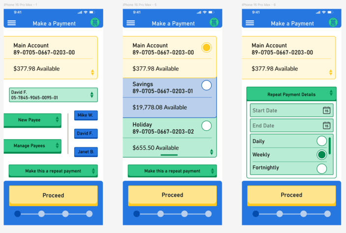
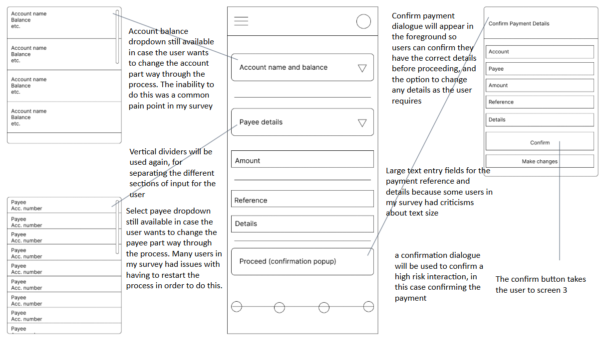
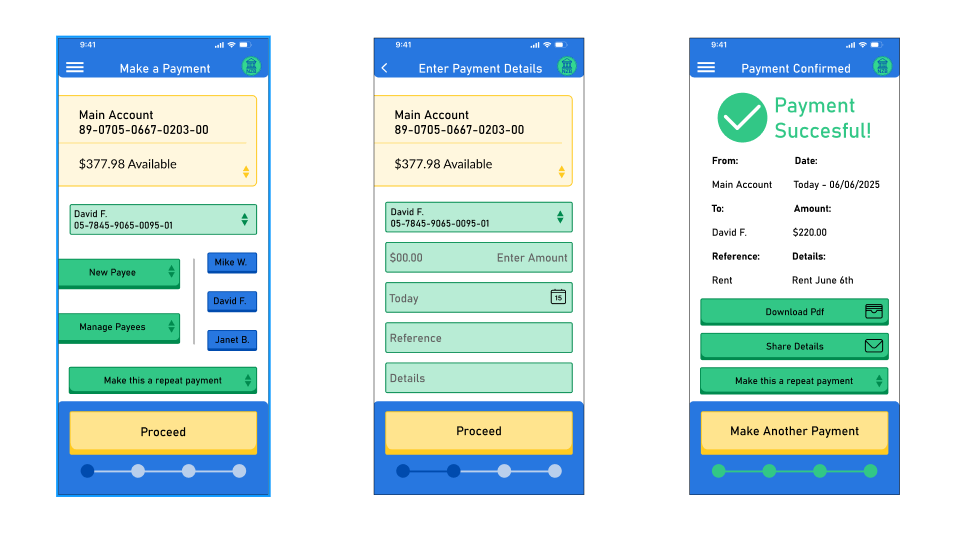
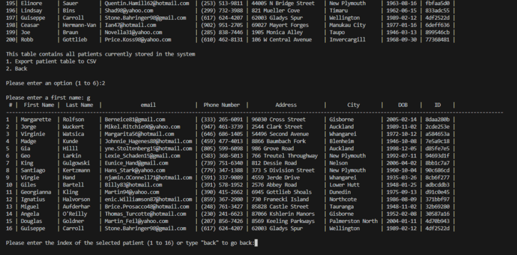
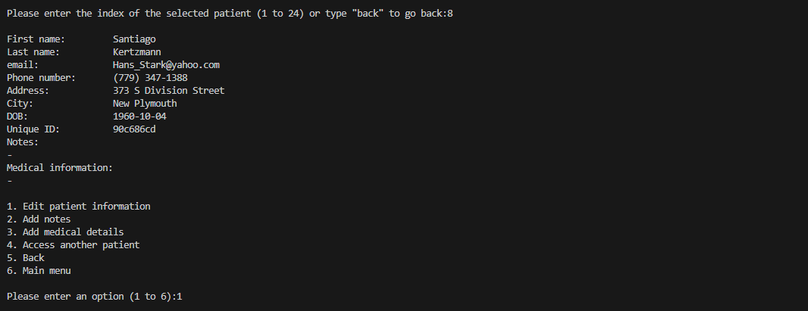
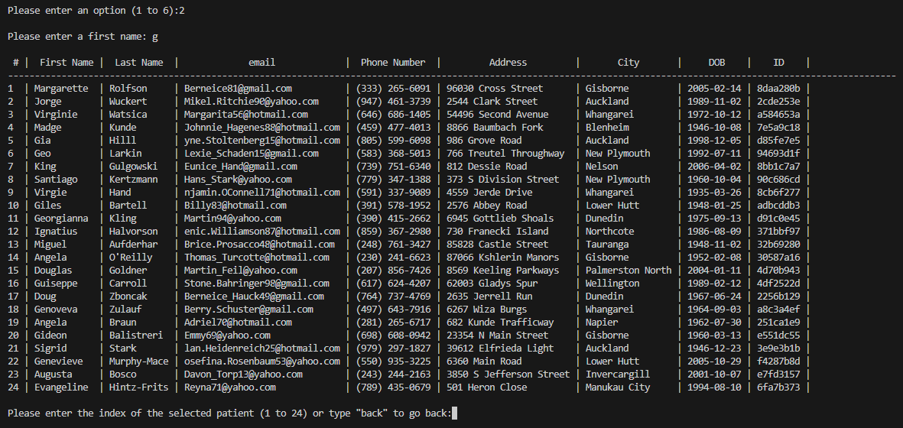
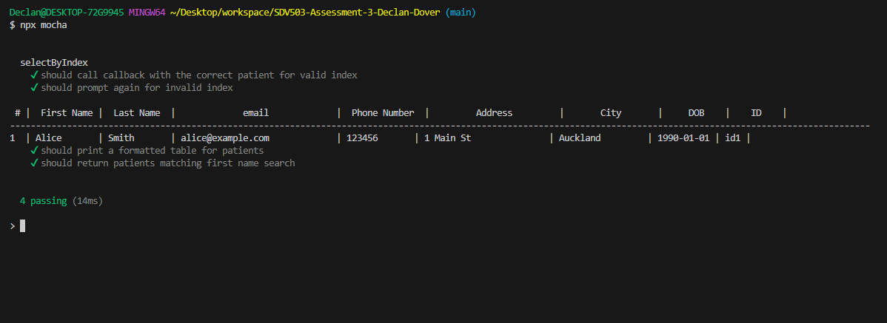
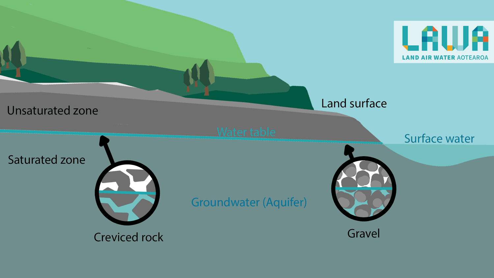
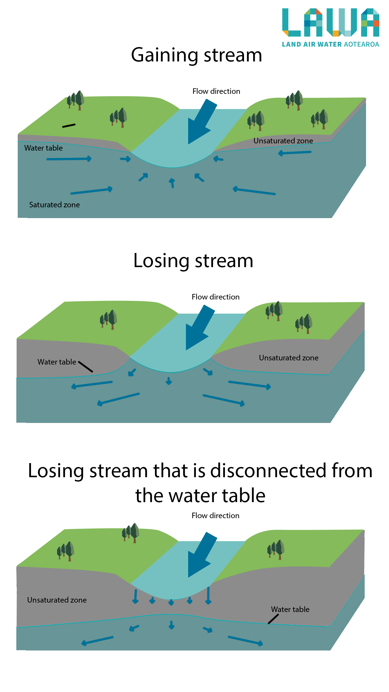

A series of mockups and prototypes for
the payment system of a mobile
banking application. I completed this
project as part of a larger study on the UI/UX
development process.

Mobile Payment UI
I began with UI research, analyzing existing apps to identify
strengths and weaknesses. Common issues included small text, unclear navigation, and
inefficient ways to manage payees.

High-fidelity Mockups
I then created user personas and developed wireframes to explore solutions.
Key design improvements included quick access to frequent payees, consistent
button styles, and better readability through larger text and
high-contrast colors.

Prototyping
I then created mockups of the UI for each step of the payment process. The final prototype
delivers a streamlined three-step payment flow: select payee, enter details,
confirm transaction. It introduces practical enhancements such as repeat payment shortcuts,
and easy new-payee options.
Patient Record System
A series of mockups and prototypes for
the payment system of a mobile
banking application. I completed this
project as part of a larger study on the UI/UX
development process.

Patient Record System
This project focused on developing a proof of concept for a patient profile management
system designed for use by healthcare providers. The system allows for storing, editing,
and retrieving patient personal and medical information. It was built as a Node.js command-line application.

Design
The application was designed with clear functionality: adding new patients, viewing and exporting
patient lists, editing and updating profiles, deleting records, and searching for patients by
various identifiers. To ensure maintainability and scalability, reusable functions and DRY principles were applied.

Testing
Testing played a crucial role in the project, with both manual and automated approaches employed.
Manual testing focused on input validation, patient profile operations, and CSV export
reliability. Automated testing was implemented with Mocha and Sinon.

Groundwater Infographics
A series of science infographics made for Land Air Water Aotearoa.
I designed and created these infographics as part of an online 2020
information campaign about groundwater processes.

Groundwater Infographics
For this project, I was given a series of groundwater processes and information and some hand drawn
diagrams with explanations. I was asked to design more modern infographics based on these for a 2020
imformation campaign by Land Air Water Aotearoa
Diagrams
The digrams explain things such as the different layers of the water table, the use of aquifers
in the extraction of water, and the ways in which different sediment types effect the flow of groundwater.
The diagrams were created in Adobe Illustrator and Adobe Photoshop with close collaboration with experts.

Final Results
The final graphics are a much more accessible and friendly approach to scientific diagrams,
while still maintaining scientific accuracy and information.